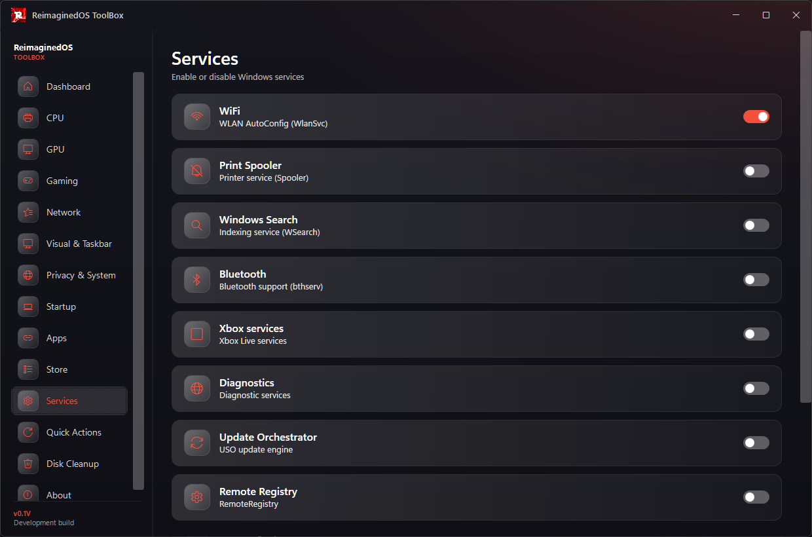

Drops the process count
Background services and scheduled tasks get gutted so hard that Task Manager looks empty.
ReimaginedOS is a Windows optimization playbook for AME Wizard. Fewer processes. Less bloat. No tracking. Built for speed, privacy and gaming — and every single tweak is your choice.
Not released yet — follow the repo to be the first to know when it drops.
Six pillars, one goal: a Windows that feels like yours.
Background services and scheduled tasks get gutted so hard that Task Manager looks empty.
Microsoft Store, Copilot, Widgets, OneDrive, Teams and the rest — removed for good, even on modern Windows builds.
Telemetry blocked at every level, tracking off, Windows Update under your control.
Power plans, timers and network settings squeezed for maximum FPS and minimum latency.
Remove it, keep it, or anything in between. Every tweak is a question you answer.
Curated shortcuts, custom branding and wallpaper, and an apps folder for everything else.
A lightweight helper app that keeps your system sharp after the first run.

Flush DNS, purge RAM, rebuild icon cache, restart Explorer — in a single click.
Quick switches for Defender, Windows Update, services and telemetry.
OS, CPU, RAM, GPU and power plan at a glance, in a tiny window.
ReimaginedOS currently targets AMD64 builds of:
The playbook is still in development and being tested on virtual machines. No release date yet.
A fresh, stock Windows installation is recommended before applying the playbook.
It's still in development and being tested on virtual machines. No date yet — follow the repo or the Discord to be notified the moment it drops.
Every tweak is a question you answer — nothing is applied without your consent. A fresh, stock Windows install is still recommended before applying.
Yes. The playbook runs inside the free, open-source AME Wizard — you just drag and drop.
Of course. Defender is fully optional: remove it, keep it, or anything in between.
ReimaginedOS currently targets Windows 10 22H2 and Windows 11 23H2 / 24H2 / 25H2 (AMD64).